Hello, I'm Shawn Pinciara,
born in the new millenium, graduated in
Computer Science for New Media Communications' and
part-time artist.
You can have a look to my CV, wonder through any projects I made or just see
what I have been up to.
Contact me through email or
send me a dm.
Scroll to look at some projects

TOTEM
A musical box prototyped for musicians who want to embed a musical idea into a device — a Raspberry Pi running Pure Data live, packed with sensors to perceive the world and lights to give feedback.
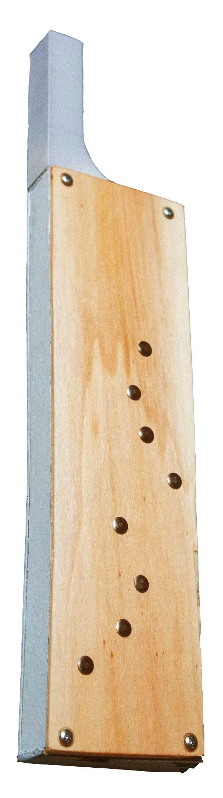
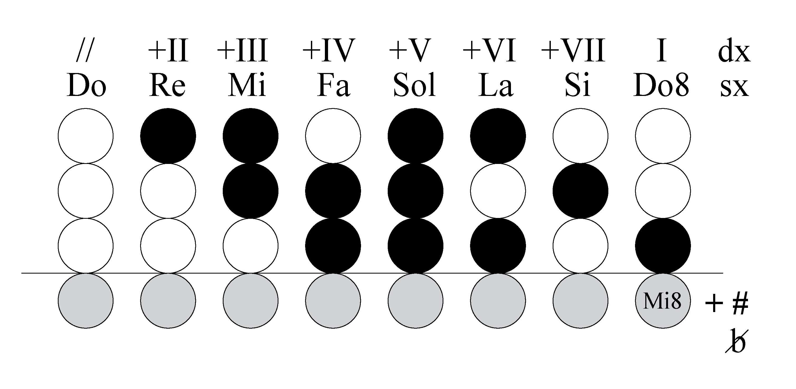
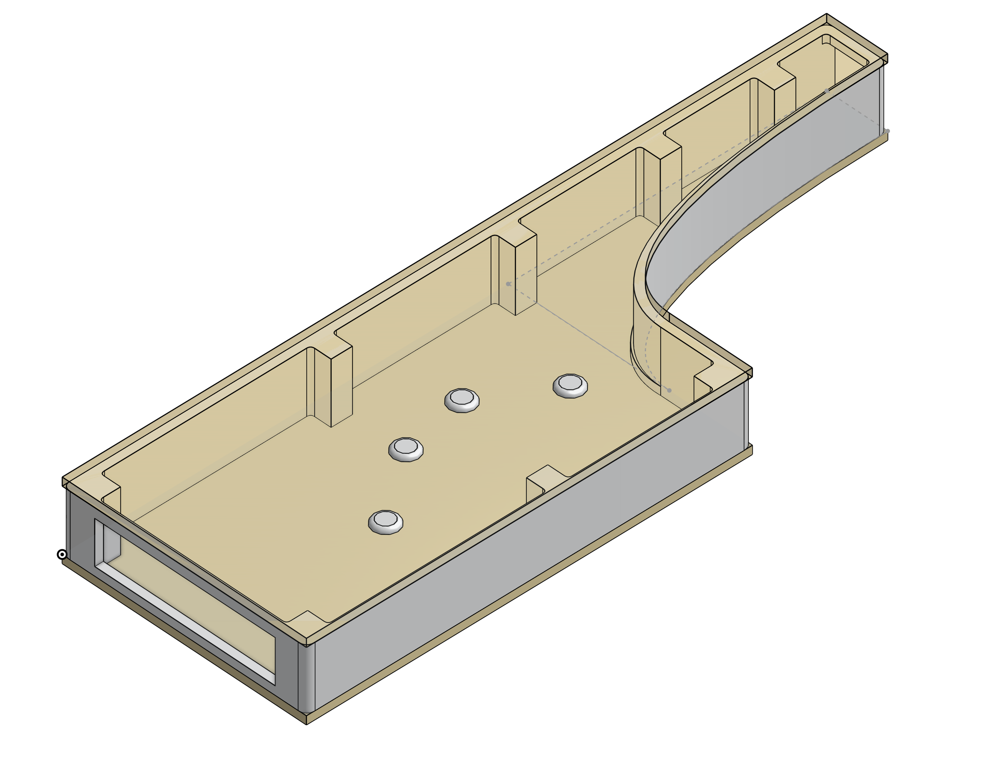
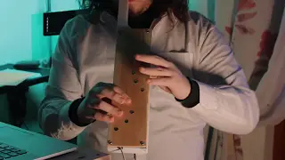
DEWI
Wind instruments are physically limited by fixed hole positions. The DEWI experiments with new finger positioning and note mapping, efficiently decreasing the number of buttons needed across 4 octaves.
Go to the project page →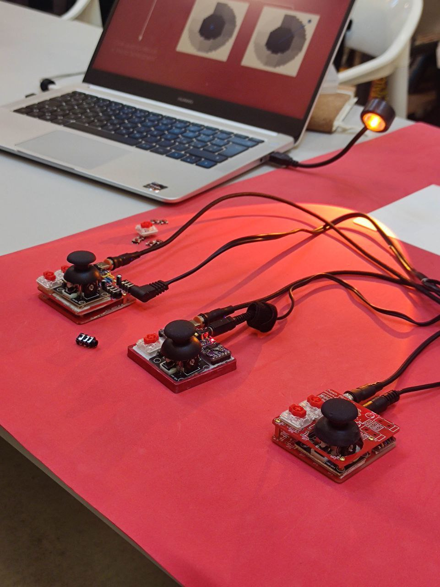
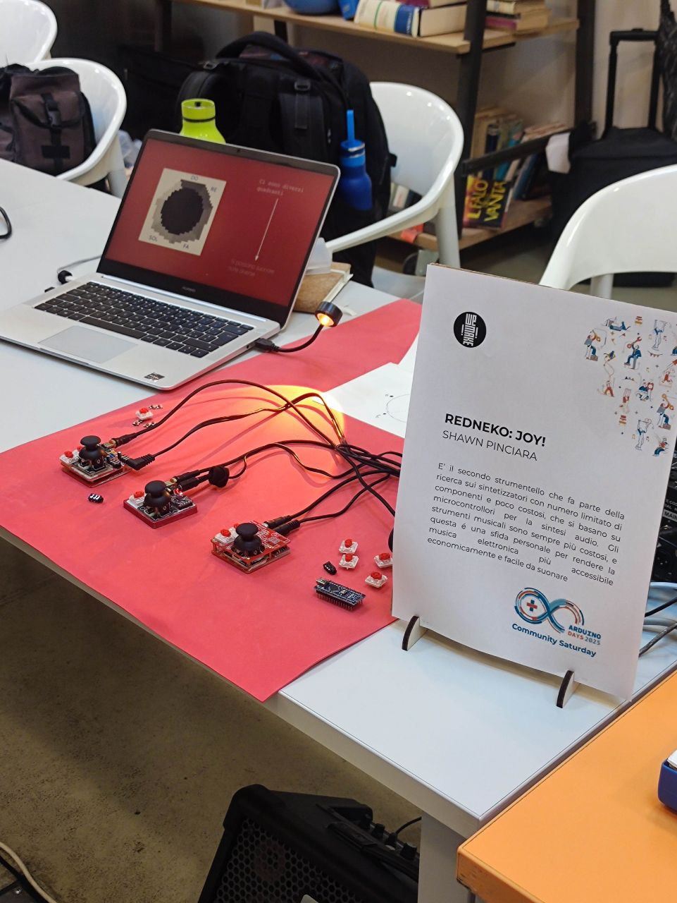
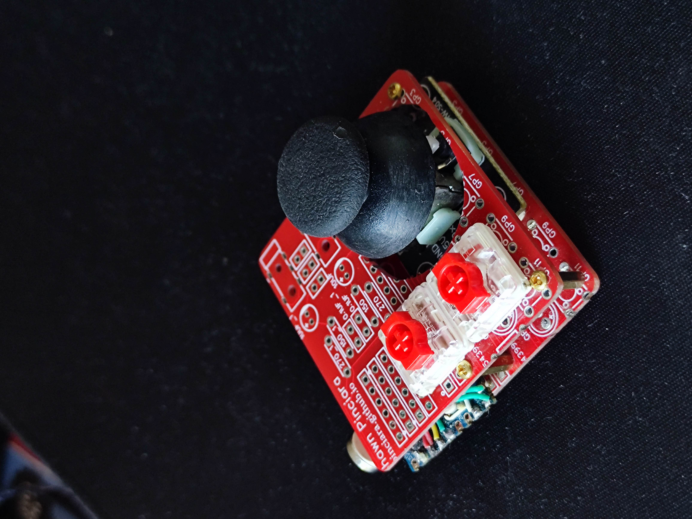
REDNEKO
A mini synthesizer, low power and low cost, built to play 7th chord inversions with interchangeable waveforms. Usable just with the joystick — strike chords with different velocities.
Go to the project page →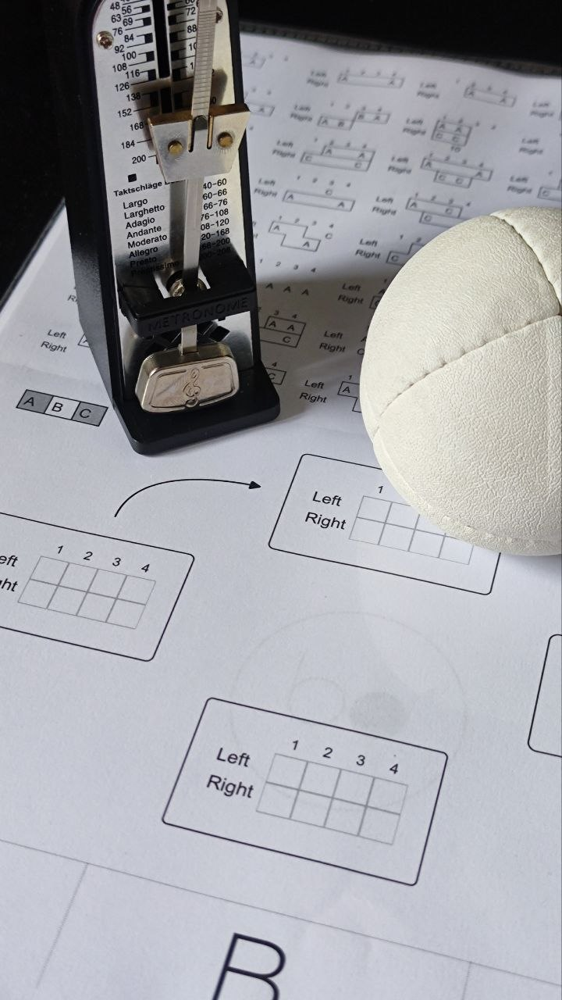
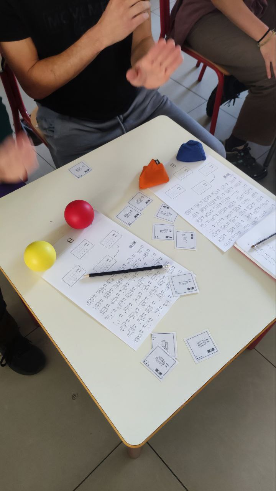
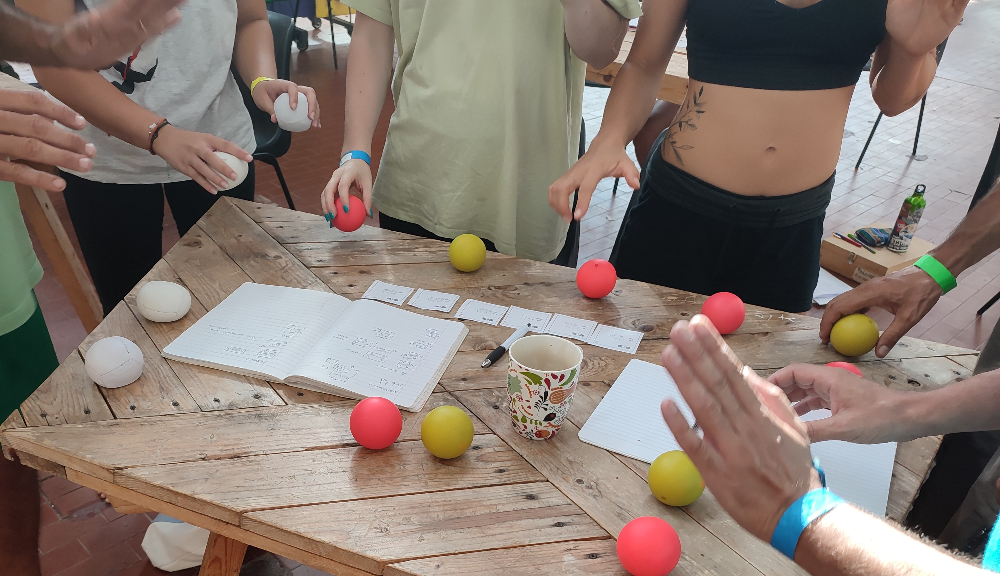
POINTS
Points CS empowers occupational therapists and patients with tools to teach and learn coordination in a fun, affordable, and effective way.
Go to the website →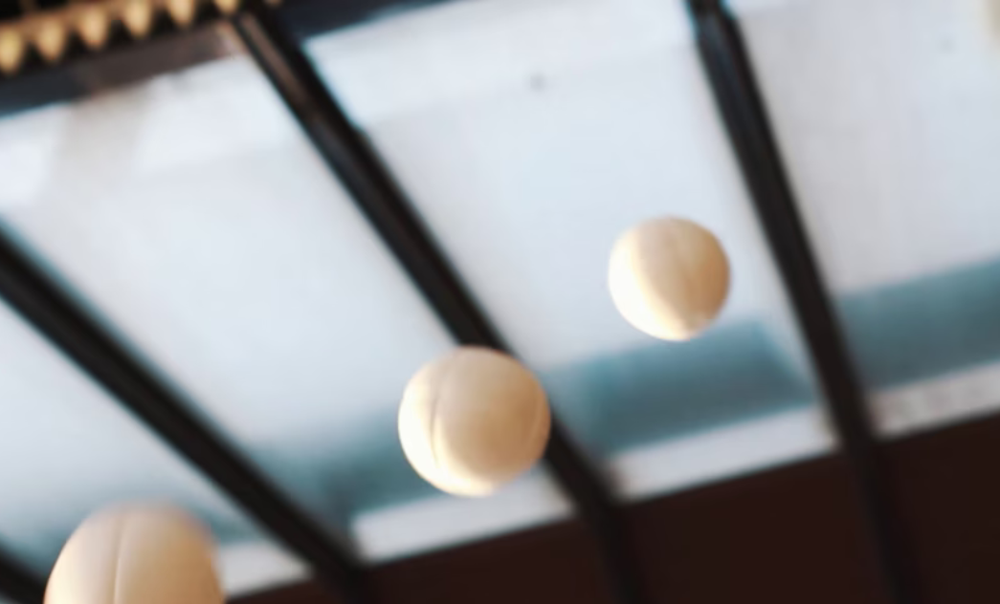
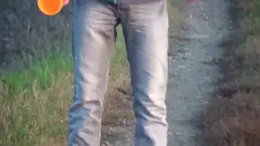
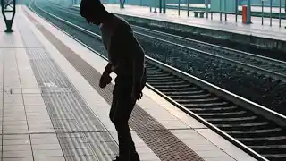
Juggling Videography
Juggling shorts I created and directed over the years, both my own work and for other people.
Go to the page →